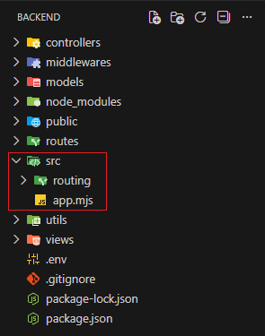
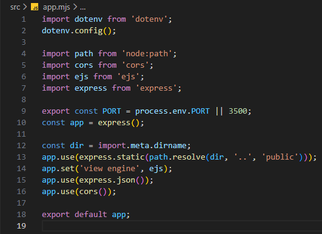
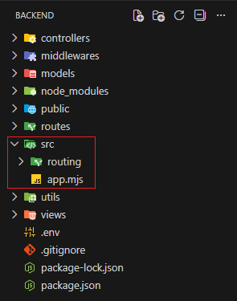
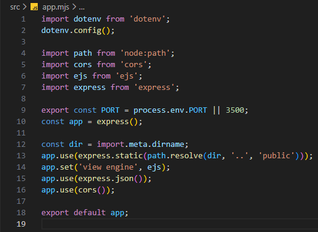

Szerver alapok - app.mjs
Szerver alapok - app.mjs

Ebben a részben létrehozzuk az src mappában az app.mjs állományt,
amelyben a webszerver létrehozásához és működéséhez szükséges kódok lesznek elhelyezve.
-
Szerkesszük az
app.mjsállományt. , és 
-
import dotenv from 'dotenv';- adotenvnpmcsomag beimportálása. -
dotenv.config();- a környezeti változókat a.envállományban keresse. -
import path from 'node:path';- apathalapnodecsomag beimportálása. -
import cors from 'cors';- acorsnpmcsomag beimportálása. -
import ejs from 'ejs';- azejsnpmcsomag beimportálása. -
import express from 'express';- azexpressnpmcsomag beimportálása. -
export const PORT = process.env.PORT || 3500;- állítsuk be aPORT-számot, amit a szerver figyeljen. Aztán vigyük ki nevesített exporttal. -
const app = express();- a hozzuk létre a webszervert. -
const dir = import.meta.dirname;- a./src/server.mjs"indító" állományt tartalmazó mappa helye. -
app.use(express.static(path.resolve(dir, '..', 'public')));- a statikus állományokat (pl. képek, CSS állományok stb.) tartalmazópublicmappa beállítása. -
app.set('view engine', ejs);- a nézetmotor (view engine) beállítása. -
app.use(express.json());- abody parserbeállítása. Ez segít ahttp request body-jában eltároltJSONinformáció kicsomagolásában. -
app.use(cors());- aCORSkérések kezelése. -
export default app;- azappobjektum kivitele alapértelmezett exporttal.
-